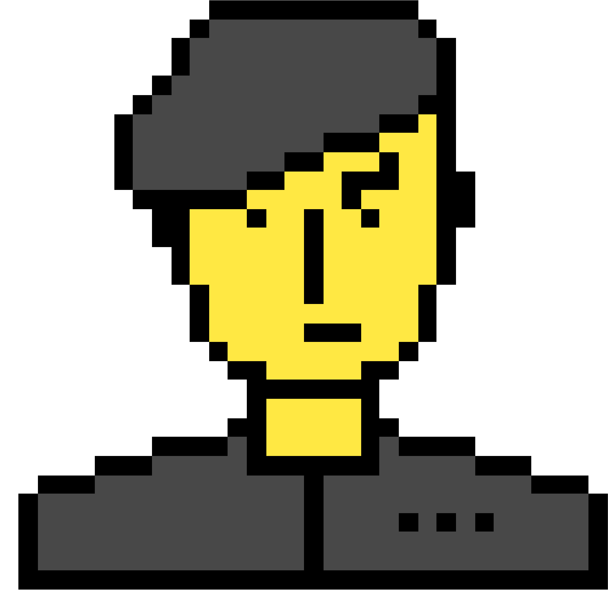
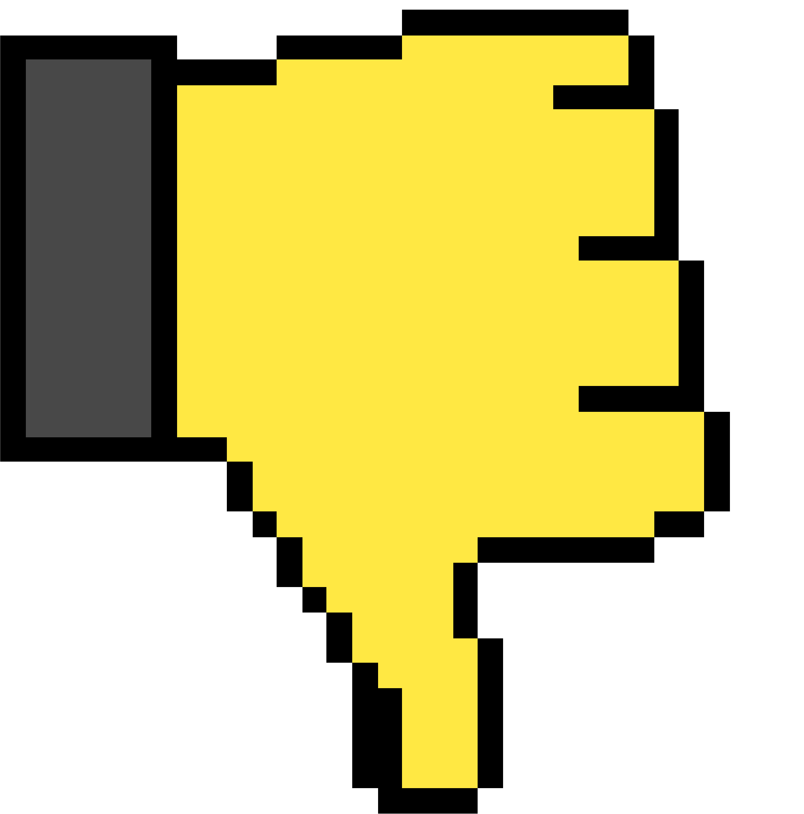
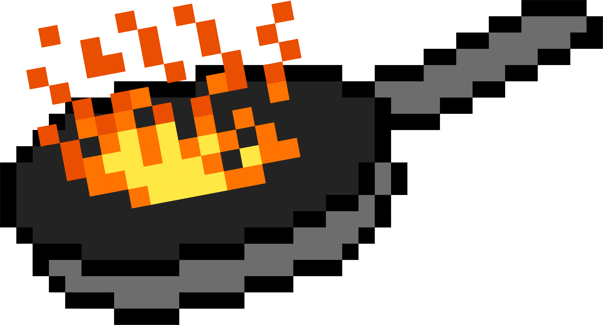
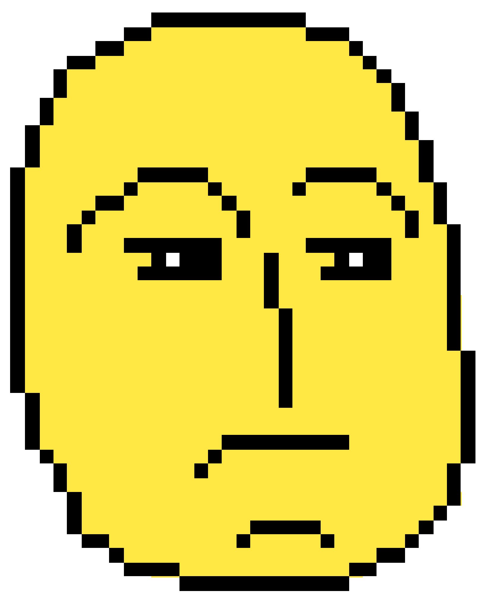

— це молодіжний сленг, який використовують для опису чогось ганебного, соромного, принизливого, безглуздого або немодного. Слово вичепили з кримінального жаргону, а вже потім воно стало масовим інтернет-словом.

Походить від дієслова "шкварити" (смажити, обпалювати). Ідея така: ніби "обпікся", "заплямувався", "зіпсувався" звідси переносне значення — зіпсував свою репутацію.

— такий собі "ветеран інтернет-сленгу", який був на піку кілька років тому. Зараз він вже не в центрі уваги, але все ще викликає повагу. його часто застосовують з ностальгією, ніби спеціально стилізуючи мову під старі меми.
— це його молодший і більш модний "родич", який став популярним через TikTok. Зараз він звучить рідніше та підходить буквально до будь-якої ситуації — від дивного відео до незручного діалогу.